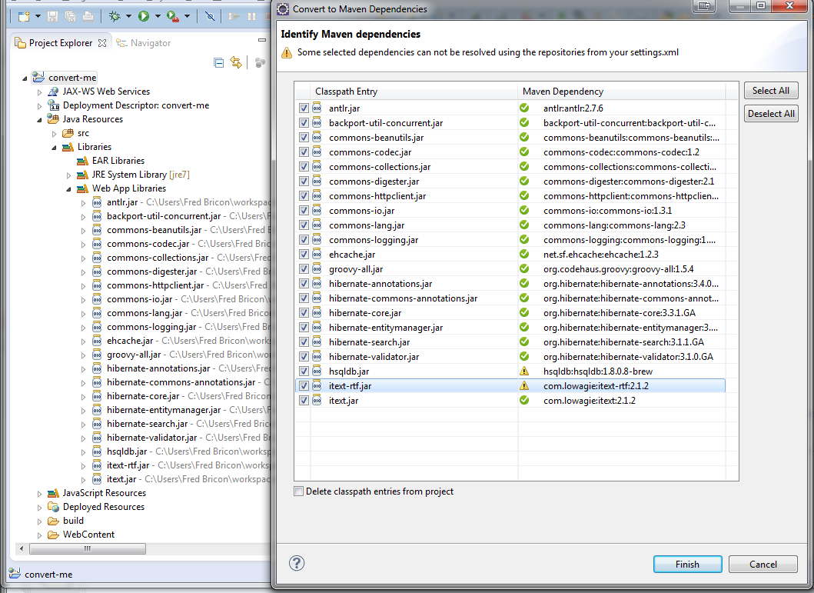

JBoss Maven Integration |
|
| New m2e-wtp 0.16.0 (eclipse.org) requirement |
m2eclipse-wtp is moving to Eclipse.org as m2e-wtp. As such the existing dependency on m2eclipse-wtp as been changed to m2e-wtp 0.16.0.
Since the two plugins overlap and can not coexist, upgrading JBoss Tools is gonna be a bit trickier this time around :
|
|
|
|
| Conversion of classpath entries to Maven dependencies |
Converting a java project to Maven is not always an easy task. m2e 1.1 introduced a new API that could help improve that conversion process. For instance, m2e and m2e-wtp can help you convert your Java (EE) eclipse project settings to their maven plugin configuration counterparts, but so far converting Java dependencies has been a tedious manual chore. In JBoss Tools 4.0, we've been toying with a new Classpath Dependency conversion mechanism, hooked to the maven conversion process aforementioned. Select a legacy Eclipse Java project, right-click then "Configure > Convert to Maven ...". After selecting the project's maven coordinate, a new Wizard will pop up, trying to identify all the project's classpath entries as their equivalent Maven dependencies : Here is how it works currently:
The identification mechanism itself is based on a refactored version of our previous Source Lookup feature and tries several identification methods :
Once you click Finish, any selected dependencies will be added to the generated pom.xml. If you checked "Delete classpath entries from project", all the project classpath entries will be removed from the eclipse classpath, as we expect the Maven Dependencies Library to provide all these dependencies. Be aware this is a very alpha quality work-in-progress. For instance, UI freezes should be expected in this first iteration, caused by the Maven resolution part; "In-progress" Identification status is not correclty reported. You can contribute to improve that feature by testing and reporting bug / enhancement requests to JIRA, using the maven_conversion label. As a final note, this conversion tool is made to help you kickstart your project migration to Maven, but won't solve all your problems :
See JBIDE-8973 for more details. |
|
|
|